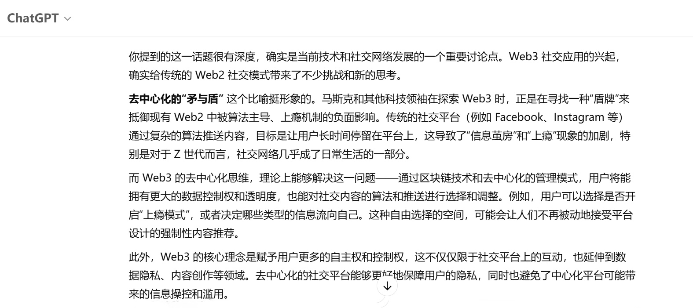

昨天看到新闻说，马斯克他们正在尝试创建Web3社交应用。而现如今的Web2社交应用通过算法控制，形成了无法选择的强上瘾机制，很多Z世代的人深陷其中。
如果Web3社交去中心化的时代到来，社交平台的算法将不再强制，用户可以自由选择获取信息流。例如，可以选择不再处于Web2不可选择的“强上瘾模式”。更重要的是，去中心化的Web3是真正的自由平台，不会因为资本家的思想操控而限制信息流。Web3代表了民权的进步，去中心化的社交平台让我们能更加自由地掌控社交体验。
Web3的去中心化思维理论上可以解决传统Web2社交平台的诸多问题，赋予用户更多的自主权。通过透明的区块链技术，社交平台不再受单一机构的垄断，能够有效抵御信息操控与隐私侵犯。
2025.4.26 日志 作者：Janney
